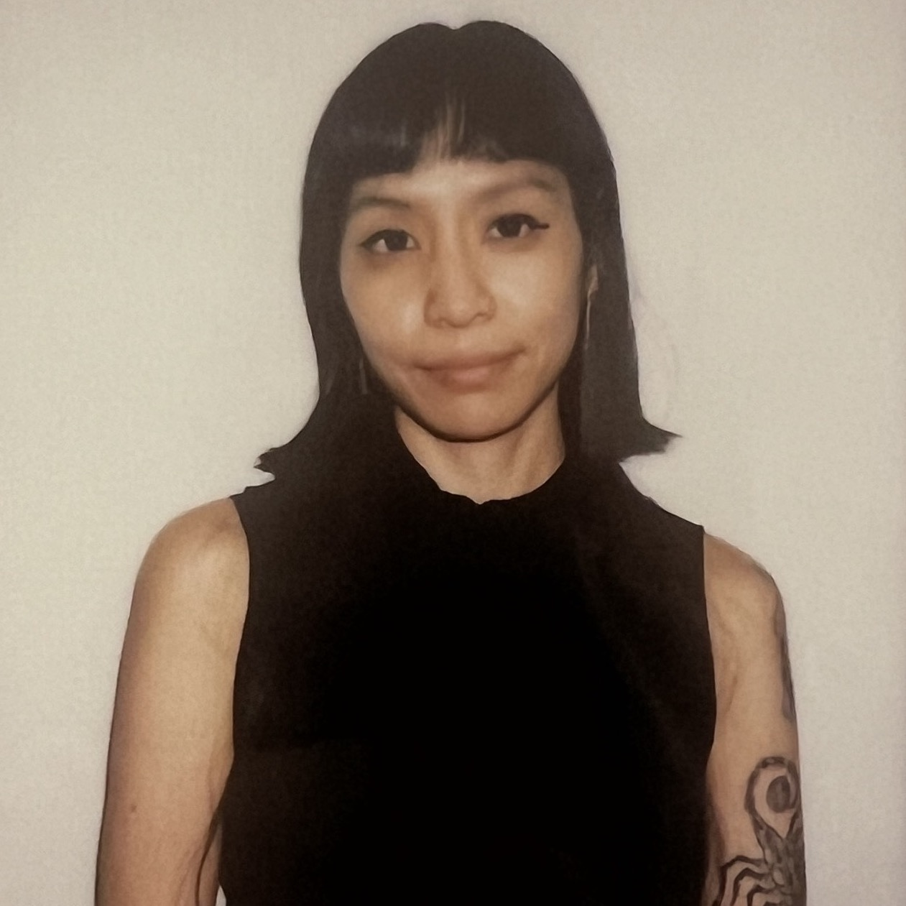

  <div class="wrap">
    <div class="container">
      <section>
        <div class="image-wrap"></div>
        <p>Cella M. Sum is an interdisciplinary researcher and PhD student at Carnegie Mellon University's Human-Computer Interaction Institute.
        </p>
        <p>
          Her research focuses on AI, labor, disability, and care infrastructures. Drawing from postcolonial, feminist, and critical disability perspectives, she examines the politics of care in technologies. Using community-based participatory design methods, she works with affected communities to co-create more just alternatives.
        </p>
        <p>
          Cella holds a Master's degree in Human-Computer Interaction and Design from UC Irvine and a BS in Computer Science from Shippensburg University. She has over 15 years of industry experience in software engineering, UX research, and design.
        </section>
      </div>
  </div>
